从零构建 MCP Server 与协议深度剖析
动手写一个 MCP Server，彻底搞懂协议细节
本视频是 MCP 系列的进阶篇，分为三个部分：
原视频文件较大（104.7 MB），请前往 B 站观看：
从写代码到协议本质，7 个章节逐步深入
三个层次，从实践到理论
Python + uv + VSCode + Cline
本视频使用 Python 来开发 MCP Server。你需要准备：
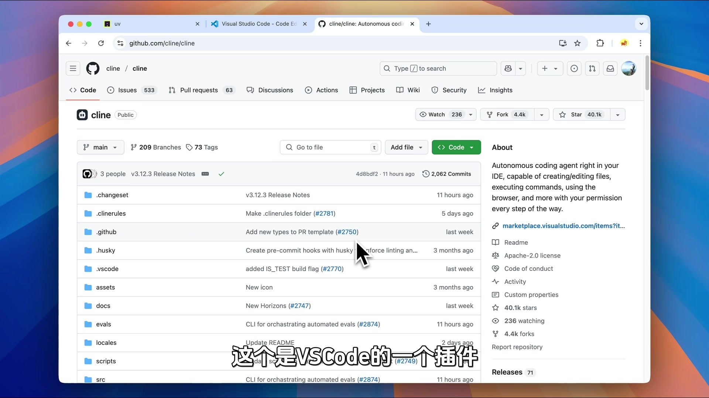
首先创建项目并进入虚拟环境：
# 创建项目
uv init weather
cd weather
# 创建虚拟环境
uv venv
# 激活虚拟环境（macOS/Linux）
source .venv/bin/activate
# 安装 MCP 依赖
uv add "mcp[cli]" httpx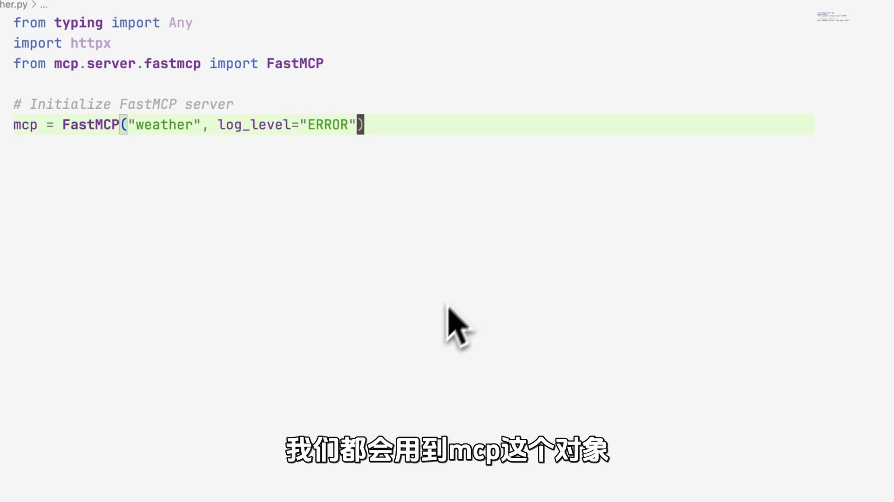
mcp[cli] 是 MCP 的核心依赖httpx 用于调用 HTTP API（查询天气需要）实现 get_alerts 和 get_forecast 两个 Tool
创建 weather.py 文件，开始编写代码。
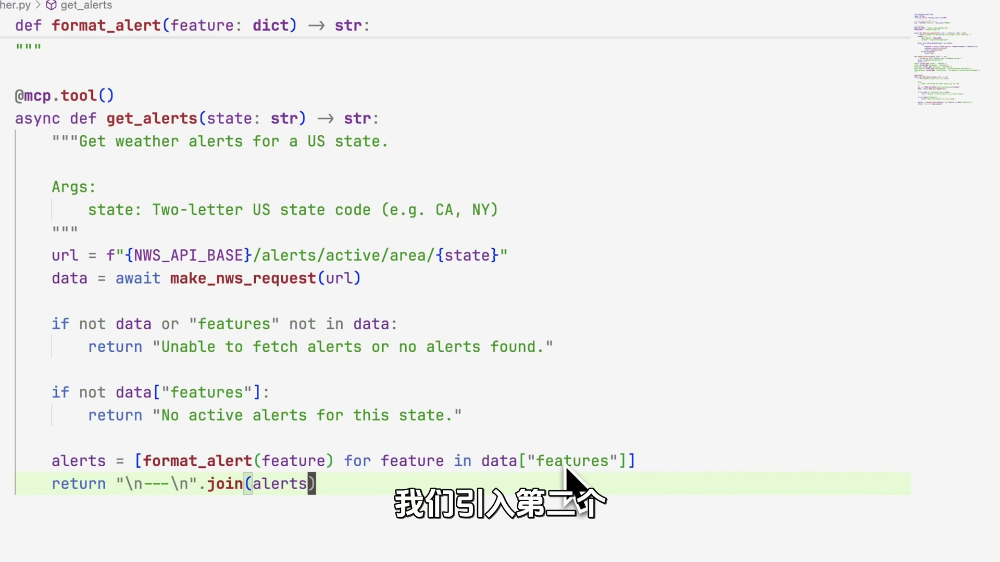
首先导入必要的包并创建 MCP 实例：
from mcp.server.fastmcp import FastMCP
import httpx
# 创建 MCP Server
mcp = FastMCP("weather", log_level="ERROR")
# 美国气象局 API
NWS_API_BASE = "https://api.weather.gov"
USER_AGENT = "weather-app/1.0"log_level="ERROR"，否则程序会输出各种日志，干扰 MCP Server 的 STDIO 通信，导致无法正常运行。
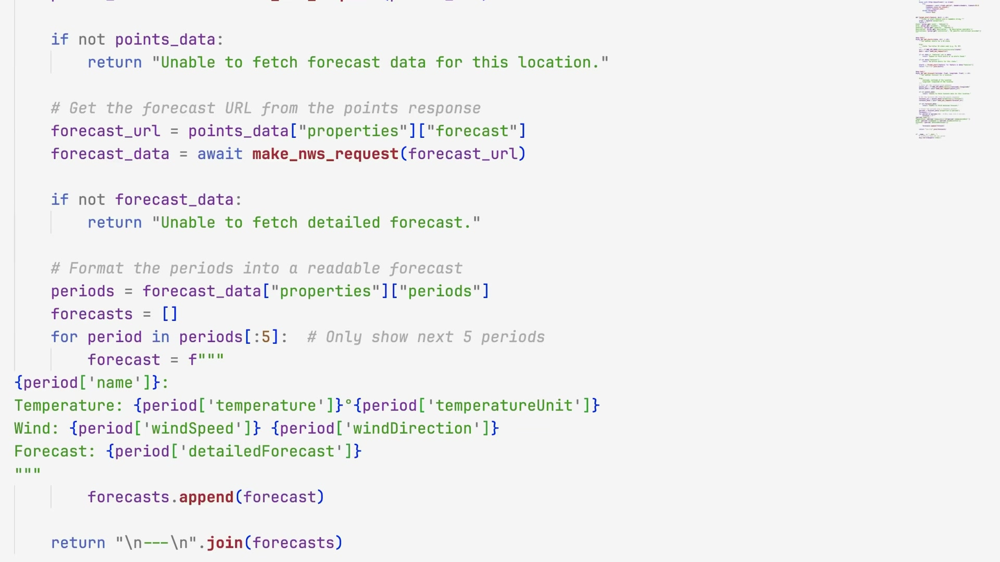
@mcp.tool()
async def get_alerts(state: str) -> str:
"""获取美国某个州的天气预警信息
Args:
state: 美国州代码（如 CA、NY）
"""
url = f"{NWS_API_BASE}/alerts/active/area/{state}"
response = await make_nws_request(url)
if not response or not response.get("features"):
return f"没有发现 {state} 州的天气预警"
return format_alerts(response)这个函数接受美国州代码（如 CA、NY），调用美国气象局 API 获取预警信息。
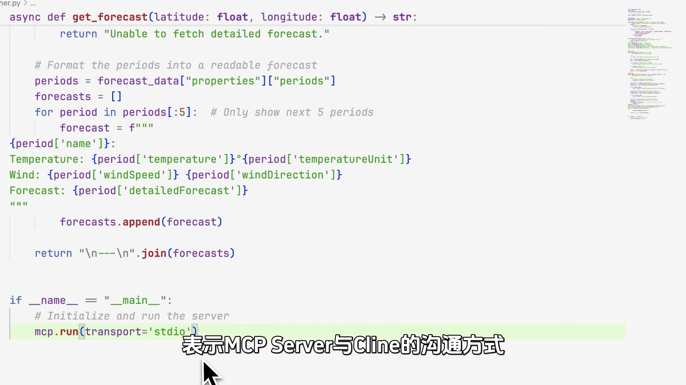
@mcp.tool()
async def get_forecast(latitude: float, longitude: float) -> str:
"""获取指定经纬度地区的天气预报
Args:
latitude: 纬度
longitude: 经度
"""
# 第一步：获取预报 URL
points_url = f"{NWS_API_BASE}/points/{latitude},{longitude}"
points = await make_nws_request(points_url)
forecast_url = points["properties"]["forecast"]
# 第二步：获取预报详情
forecast = await make_nws_request(forecast_url)
return format_forecast(forecast)这个函数接受经纬度，先获取预报 URL，再获取详细预报。它调用了两次 API。
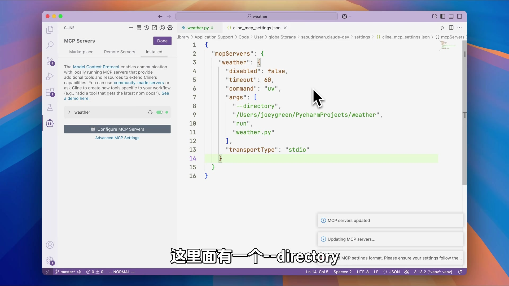
在 Cline 的 MCP Server 配置文件中添加：
{
"mcpServers": {
"weather": {
"command": "uv",
"args": ["--directory", "/path/to/weather", "run", "weather.py"]
}
}
}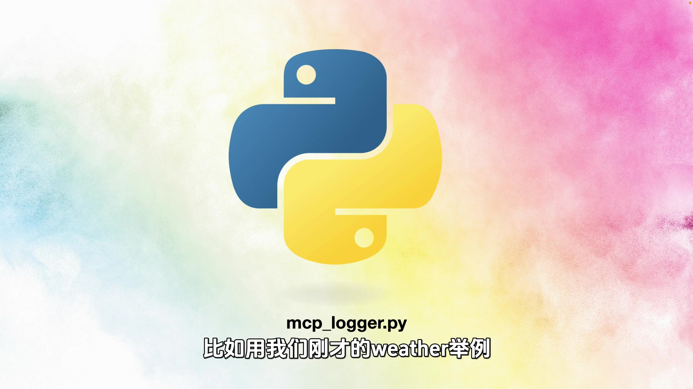
配置完成后，问 Cline："纽约明天的天气怎么样？"它会调用我们的 MCP Server 查询天气。
记录输入输出，逐行剖析 JSON 通信
为了理解 MCP 协议的细节，我们需要记录 MCP Server 的输入输出。
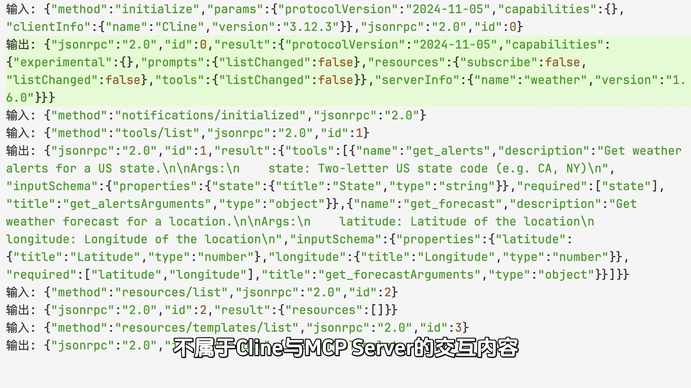
编写一个日志记录脚本，拦截 STDIO 通信：
import sys
import json
from datetime import datetime
log_file = open("mcp.log", "a", encoding="utf-8")
def log(direction, data):
timestamp = datetime.now().isoformat()
log_file.write(f"[{timestamp}] {direction}: {json.dumps(data)}\n")
log_file.flush()
# 拦截 stdin 和 stdout
# ...（具体实现见视频代码）然后在配置中使用这个脚本包装 MCP Server：
{
"mcpServers": {
"weather": {
"command": "python",
"args": ["mcp_logger.py", "uv", "--directory", "...", "run", "weather.py"]
}
}
}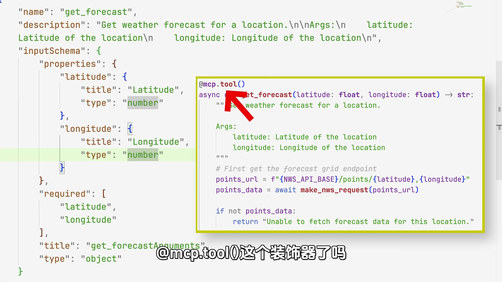
日志文件记录了所有通信，格式如下：
[2025-04-14T10:00:00] C→S: {"jsonrpc":"2.0","method":"initialize",...}
[2025-04-14T10:00:00] S→C: {"jsonrpc":"2.0","result":{...}}
[2025-04-14T10:00:01] C→S: {"jsonrpc":"2.0","method":"tools/list",...}
[2025-04-14T10:00:01] S→C: {"jsonrpc":"2.0","result":{"tools":[...]}}
[2025-04-14T10:00:05] C→S: {"jsonrpc":"2.0","method":"tools/call",...}
[2025-04-14T10:00:06] S→C: {"jsonrpc":"2.0","result":{"content":[...]}}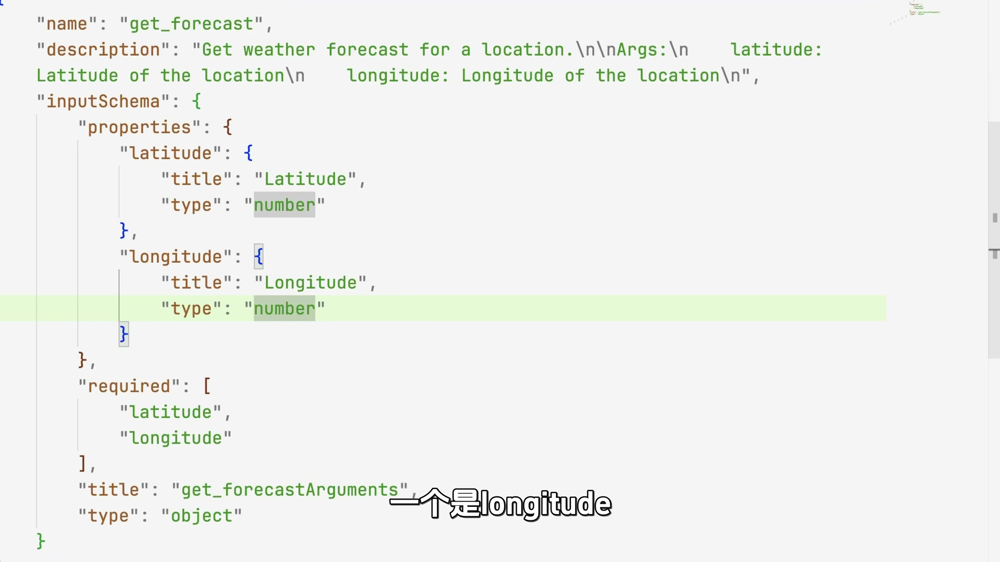
1. initialize（握手）
// Client → Server
{
"jsonrpc": "2.0",
"method": "initialize",
"params": {
"protocolVersion": "2024-11-05",
"clientInfo": {"name": "cline", "version": "1.0.0"}
}
}
// Server → Client
{
"jsonrpc": "2.0",
"result": {
"protocolVersion": "2024-11-05",
"serverInfo": {"name": "weather", "version": "1.0.0"}
}
}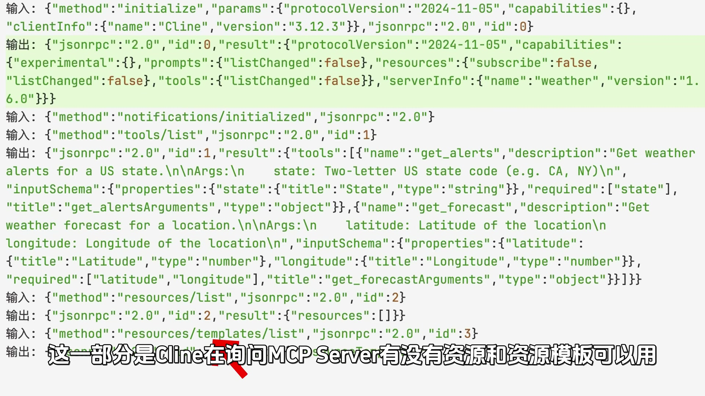
2. tools/list（获取工具列表）
// Client → Server
{
"jsonrpc": "2.0",
"method": "tools/list"
}
// Server → Client
{
"jsonrpc": "2.0",
"result": {
"tools": [
{
"name": "get_alerts",
"description": "获取美国某个州的天气预警信息",
"inputSchema": {
"type": "object",
"properties": {
"state": {"type": "string", "description": "美国州代码"}
},
"required": ["state"]
}
},
{
"name": "get_forecast",
"description": "获取指定经纬度地区的天气预报",
"inputSchema": {
"type": "object",
"properties": {
"latitude": {"type": "number"},
"longitude": {"type": "number"}
},
"required": ["latitude", "longitude"]
}
}
]
}
}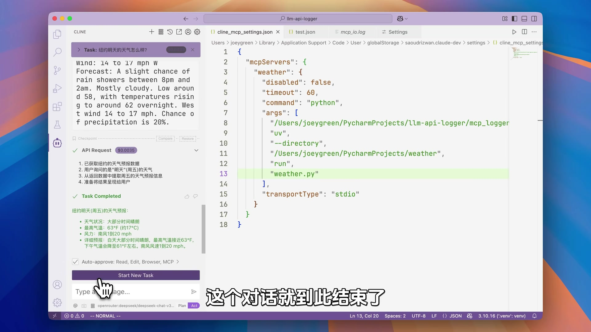
3. tools/call（调用工具）
// Client → Server
{
"jsonrpc": "2.0",
"method": "tools/call",
"params": {
"name": "get_forecast",
"arguments": {
"latitude": 40.7128,
"longitude": -74.0060
}
}
}
// Server → Client
{
"jsonrpc": "2.0",
"result": {
"content": [
{
"type": "text",
"text": "纽约天气预报：\n今晚：多云，最低 15°C\n明天白天：晴，最高 22°C..."
}
]
}
}不经过 Cline，直接通信
理解了协议细节后，你甚至可以不需要 MCP Host，直接在终端与 MCP Server 交互。
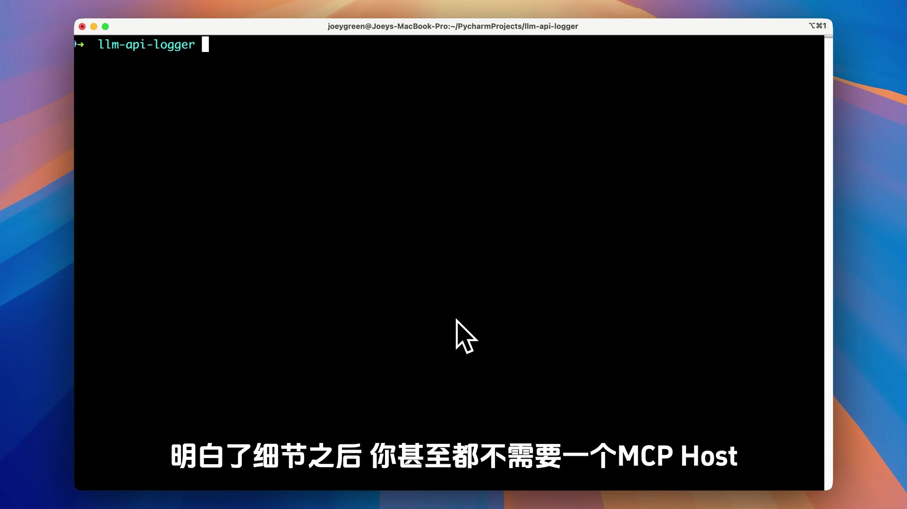
首先在终端运行 MCP Server：
uv run weather.py然后手动发送 JSON 消息。
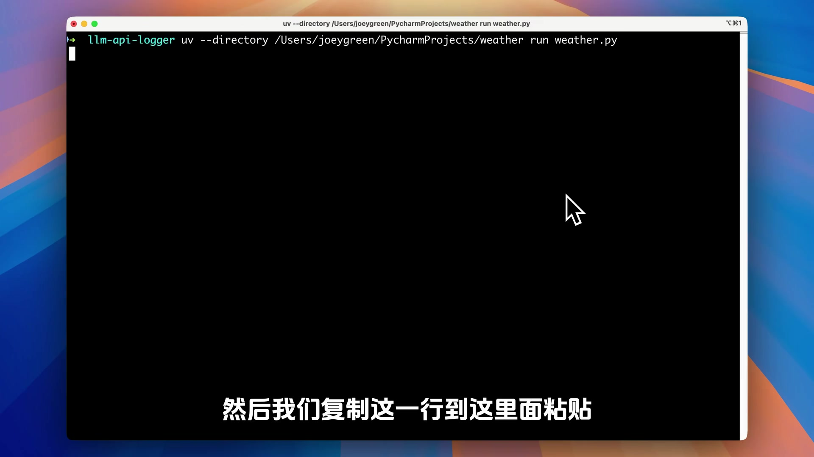
复制 initialize 消息，粘贴到终端：
{"jsonrpc":"2.0","method":"initialize","params":{"protocolVersion":"2024-11-05","clientInfo":{"name":"马克的技术工作坊","version":"1.0.0"}}}MCP Server 会回复：
{"jsonrpc":"2.0","result":{"protocolVersion":"2024-11-05","serverInfo":{"name":"weather","version":"1.0.0"}}}这就是握手过程。
{"jsonrpc":"2.0","method":"tools/list"}MCP Server 会返回工具列表（包含 get_alerts 和 get_forecast）。
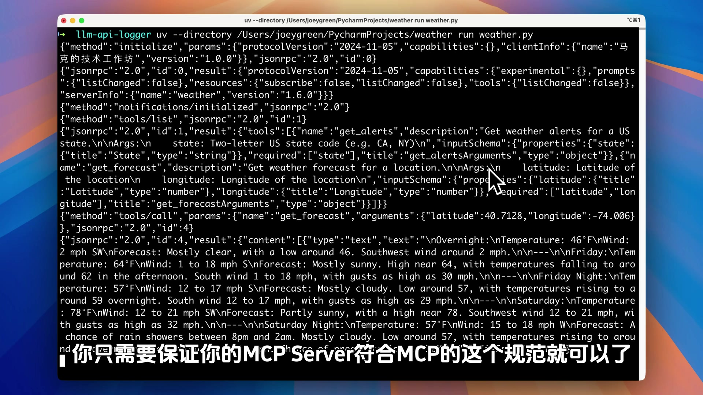
{"jsonrpc":"2.0","method":"tools/call","params":{"name":"get_forecast","arguments":{"latitude":40.7128,"longitude":-74.0060}}}MCP Server 会返回天气预报结果。
协议只规定函数的注册与使用
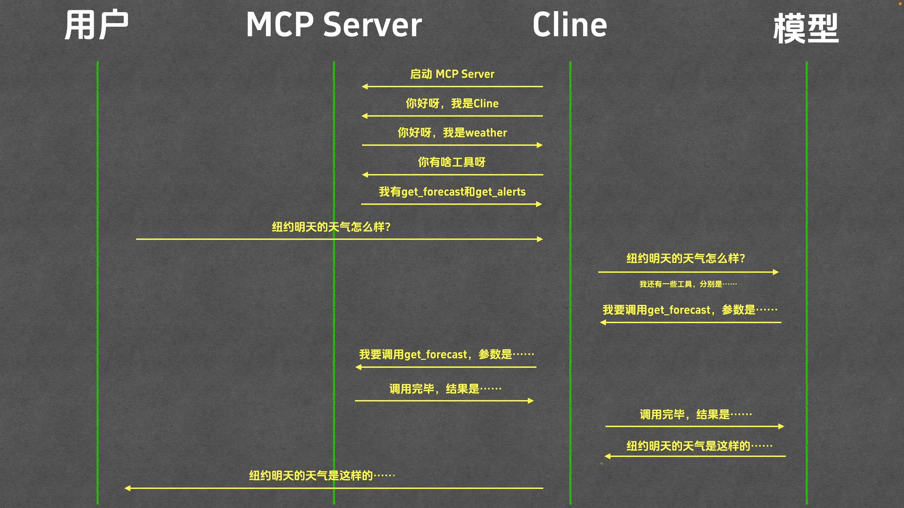
回顾基础篇的交互流程图，我们可以清楚地看到：
这些交互与模型没有任何关系。
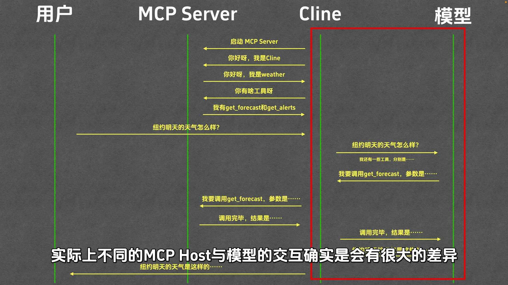
有人可能会问：为什么我在 MCP 日志里没有看到模型的影子？模型是如何使用 MCP 协议的？
这一点很重要。明白了这一点，你就明白了 MCP 协议的本质。
不同的 MCP Host 与模型的交互方式确实会有很大差异：
| MCP Host | 与模型的交互方式 |
|---|---|
| Cline | 使用 XML 与模型沟通 |
| Cherry Studio | 使用 Function Calling 格式与模型沟通 |
Function Calling 是 OpenAI 提出的一套协议，用来规定模型如何调用函数。
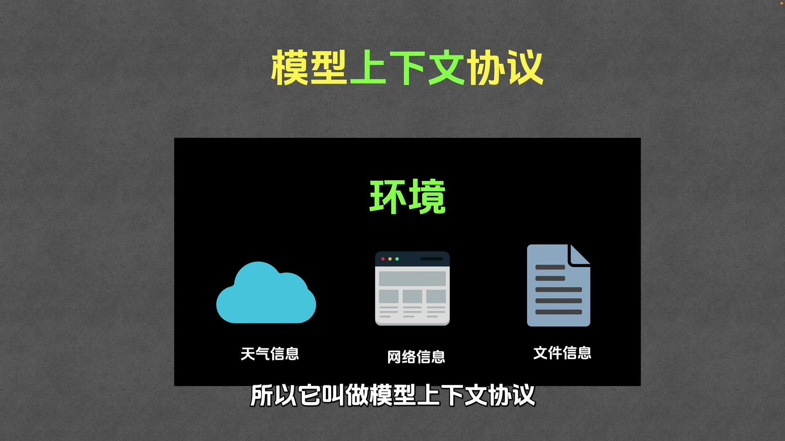
我们再回头看看 MCP 这个名字——模型上下文协议。
这个名字合适吗？说实话，作者觉得这个名字起得不太好：
把整期视频压缩成一张表
| 问题 | 结论 |
|---|---|
| 进阶篇讲了什么？ | 三个部分：写 MCP Server、抓包分析协议、理解协议本质 |
| 用什么语言写 MCP Server？ | Python（也可以用 Node、Java、C# 等） |
| FastMCP 是什么？ | 帮助快速构建 MCP Server 的工具函数 |
| 为什么要加 log_level="ERROR"？ | 否则日志会干扰 STDIO 通信，导致 MCP Server 无法运行 |
| 如何记录 MCP 通信？ | 用脚本拦截 STDIO，记录 JSON 消息到日志文件 |
| MCP 协议规定了什么？ | 函数的注册与使用（initialize / tools/list / tools/call） |
| MCP 协议规定了与模型的交互吗？ | 没有。不同 Host 用不同方式（Cline 用 XML，Cherry Studio 用 Function Calling） |
| 可以不用 MCP Host 吗？ | 可以。只要发送符合协议的 JSON 消息，你就是 MCP Host |
| "模型上下文协议"是什么意思？ | 让模型感知外部环境（天气、网络、文件等）的协议 |
| MCP 协议脱离大模型能用吗？ | 能。它规定的是函数注册与调用，与模型无关 |
视频中的关键概念
| 术语 | 英文 | 解释 |
|---|---|---|
| FastMCP | FastMCP | 帮助快速构建 MCP Server 的工具函数 |
| STDIO | Standard Input/Output | 标准输入输出，MCP 的通信方式 |
| JSON-RPC | JSON-RPC 2.0 | MCP 使用的远程过程调用协议 |
| initialize | initialize | 握手消息，建立连接 |
| tools/list | tools/list | 获取工具列表 |
| tools/call | tools/call | 调用工具 |
| inputSchema | Input Schema | 工具参数的 JSON Schema 定义 |
| Function Calling | Function Calling | OpenAI 提出的模型调用函数的协议 |
| uv | uv | Python 的包管理器 |
| httpx | httpx | Python 的 HTTP 客户端库 |